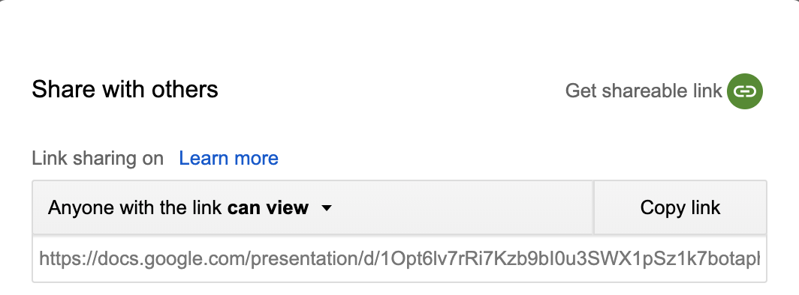

- Make reproducible videos
- Provide users flexibility of what Services (Google/Amazon) they want to use
Translate video into another language
aricreates reproducible videos, but …
Overall Goals of the Project
Goal: Harmonize all inputs to ari
Workflow of ari

Workflow of ari - functions
- Images with a audio →
ari_stitch - Rmd document with HTML comments → Images with a text script (
ari_narrate) - Images with a text script →
ari_spin
Workflow of ari: Version 1.0
- Synthesize audio through Amazon Polly
- Do checks with length of images and audio/text
- Set a whole bunch of
ffmpegflags and runffmpegthroughsystem - Audio + Images →
ffmpeg→ mp4
Example of checks

Workflow of ari: Version 2.0
- Text script → audio (through
text2speechpackage) - Synthesize audio through
text2speechpackage - Use
ariExtrato unify the output format to use onearifunction - Create an
ffmpegpackage (short term, not done) and pass to that - Pass images and such through
avpackage (long term)
text2speech: Harmonizing Text to Speech Packages
Text to Speech
googleLanguageR- Google Cloud Servicesaws.polly- Amazon Pollymscstts- Microsoft Text-to-Speech or Bing Speech (my package)
text2speech 
Text to Speech: knitr Enginge
Add this to the header
```{r}
knitr::knit_engines$set(speak = text2speech::tts_speak_engine)
```
Then have a code chunk like:
```{speak, service = "amazon", voice = "Joanna"}
Here are a bunch of words to say stuff
```
Text to Speech Example
Amazon
Microsoft
Workflow of ariExtra
- PPTX with notes →
pptx_to_ari - Google Slides with notes →
gs_to_ari ioslidesRmd with comments →rmd_to_arixaringanRmd with comments →rmd_to_ariPDF + text →
pdf_to_ariAll
*_to_arifunctions →make_ari_document→ PNGs + comments in MD
Google Slides Example
https://docs.google.com/presentation/d/1Opt6lv7rRi7Kzb9bI0u3SWX1pSz1k7botaphTuFYgNs/edit#slide=id.p

Google Slides Example
id = get_slide_id(
paste(
"https://docs.google.com/presentation/d",
"1Opt6lv7rRi7Kzb9bI0u3SWX1pSz1k7botaphTuFYgNs",
"edit#slide=id.p", sep = "/"))
id
[1] "1Opt6lv7rRi7Kzb9bI0u3SWX1pSz1k7botaphTuFYgNs"
Google Slides Example
result = gs_to_ari(id, verbose = FALSE); xx = readLines(result$output_file)[1:15] names(result);
[1] "output_file" "original_images" "images" "script" [5] "use_knitr"
head(result$script, 2)
[1] "Lean pub created a mook platform. We want to discuss some options for creating courses with Lean pub at Johns Hopkins." [2] "Here is an example of the way Lean pub turns text into an output course. The left hand side is written in a markdown format called Markua."
head(result$images, 2)
[1] "/private/var/folders/1s/wrtqcpxn685_zk570bnx9_rr0000gr/T/RtmpjclHRr/filee22763909e20_files/slide_1.png" [2] "/private/var/folders/1s/wrtqcpxn685_zk570bnx9_rr0000gr/T/RtmpjclHRr/filee22763909e20_files/slide_2.png"
Google Slides Example
cat(xx, sep = "\n")
---
output:
ariExtra::ari_document:
verbose: no
---
----------
<!--Lean pub created a mook platform. We want to discuss some options for creating courses with Lean pub at Johns Hopkins.-->

----------
Output (currently)
- Markdown file with comments in HTML (md so
knitrnot run) - Can hit
Knitin RStudio - Images converted to PNGs
Live Demo
What you need for ari
ffmpeginstalled (brew install ffmpeg)- API key to Google/Amazon/Microsoft Text-to-Speech APIs
- Authorization Howto: https://github.com/ropensci/googleLanguageR#authentication
- gets a JSON file, in
.Renviron:
GL_AUTH=location_of_json_file.json
Catches in ariExtra
- PDF to PNG requires
pdftoolswhich requieslibpoppler/popplerinstall - PPTX to PDF requires
LibreOffice - Google Slides - needs to be shared

Shiny Application
Overall Goals of the Project
- Make reproducible videos ✓
- Provide users flexibility with Services ✓
- Translate video into another language X
Overall Goals of the Project
- Make reproducible videos ✓
- Provide users flexibility with Services ✓
- Translate audio into another language ✓
didactr::copy_and_translate_slide()- Want to be able to translate any (accessible) text as well
Difficult issue: Authentication (translation)
Translating slides
- Translating text inside slides requires:
- OAuth using Google - need to be able to copy and edit the slide deck
- Google Translation API enabling (can still use JSON from above)
- Could be one API key for both, enabling all APIs (Slides + Translation)
Biggest issue with Authentication
OAuth - can edit slides and extract things w/o the “Share button”
- Cannot authenticate via OAuth for Google Cloud services
- Text to Speech
- Translate
Open Issues
- Dictionary of our “change words” RStudio to R studio - needs to be incorporated
- Translation requires API authorization
- Can we create a better output format (
tibble-like)? - Slides with no audio? Allowed? Why?
ffmpegtoavpackage -avdoesn’t have all quirks fixed- Is output format right? md vs. Rmd
Next Project steps
- Adapt
didactrwith newgargleworkflow - Get MOOC app authenticated (so no warning page)
- Streamline the translation so it translates notes (done as of 3AM)
- need to figure out how to escape/protect certain words (i.e. code or jargon)